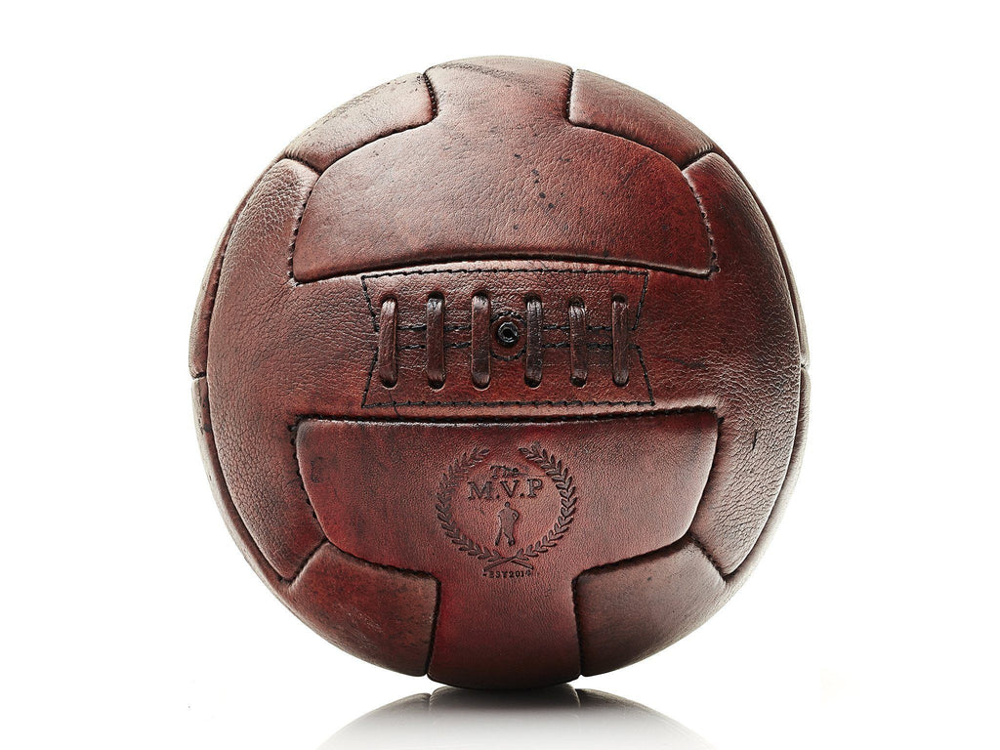

History Of Soccer
History
Soccer, also known as football, has a long and complex history, and its
origins can be traced back to ancient civilizations. However, the modern
version of soccer that we know today was developed in England during the
19th century.

The first known set of rules for soccer was established in 1863 by the
newly formed Football Association (FA) in England. This set of rules,
known as the Laws of the Game, defined the basic elements of the sport,
such as the size of the field, the number of players on each team, and
the use of a spherical ball.
Before the development of these standardized rules, various forms of
football were played in England and other parts of the world. These early
versions of the game were often played between rival villages or towns and
had different rules and objectives.
Over time, the game of soccer spread throughout the world, and today it
is the most popular sport in the world, with millions of fans and
players of all ages and abilities.